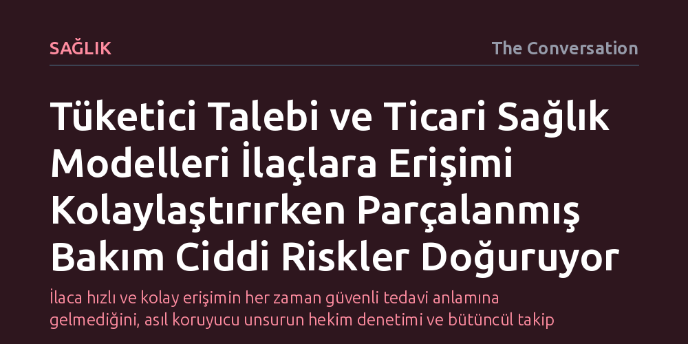

SAGLIK · The Conversation · 2026-10-12
Çevrim içi platformlar ve ticari modeller ilaçlara erişimi hızlandırsa da bilimsel kanıt ve klinik takipten yoksun parçalanmış bakım ciddi sağlık riskleri yaratıyor. Birincil hekimlerden kopuk başlayan tedaviler, yan etki ve ilaç etkileşimi yönetimini zorlaştırarak güvenliği tehdit ediyor.
İlaca hızlı ve kolay erişimin her zaman güvenli tedavi anlamına gelmediğini, asıl koruyucu unsurun hekim denetimi ve bütüncül takip olduğunu gösterir.

Sağlık sektöründe son yıllarda ilaçlara ve tedavi edici ürünlere erişim biçiminde köklü bir paradigma değişimi yaşanıyor. Geçmişte bir ilacın hastaya ulaşması; kapsamlı klinik deneylerden geçmesi, resmi sağlık otoritelerince onaylanması, klinik uygulama kılavuzlarına girmesi ve doğrudan hekimin değerlendirmesiyle reçete edilmesi sürecine bağlıydı. Bugün ise bu geleneksel hekim odaklı modelin yerini; güçlü tüketici talebi, teletıp olanakları, sosyal medya tanıtımları, sağlık fenomenleri ve doğrudan tüketiciye ulaşmayı hedefleyen ticari iş modellerinin yönlendirdiği yeni bir ekosistem alıyor.
Bu dönüşümün en somut örnekleri arasında kilo verme amaçlı kullanılan GLP-1 grubu ilaçlar, tıbbi kenevir, ketamin, psikedelikler, testosteron ve çeşitli peptitler yer alıyor. Örneğin ilaç üreticisi Eli Lilly'nin Avustralya'da hayata geçirdiği LillyDirect platformu, tip 2 diyabet ve kilo kontrolünde kullanılan tirzepatid etken maddeli Mounjaro'yu doğrudan tüketicinin kapısına teslim ediyor. Hastalar sisteme elektronik reçetelerini yükleyerek ilacı çevrim içi eczaneden temin edebiliyor. Şirket bu yöntemin kolaylık sağladığını ve maliyetleri düşürdüğünü savunurken; hekimler ve eczacılar reçete yazma, ilacı verme ve sürekli klinik takip süreçlerinin birbirinden kopmasının doğuracağı tehlikelere dikkat çekiyor.
Tüketicilerin geleneksel sağlık kanallarını baypas ederek çevrim içi platformlara yönelmesi sebepsiz değil. Standart tedavilerden sonuç alamayan, yan etkileri tolere etmekte zorlanan veya sağlık sisteminde hekimler tarafından yeterince dinlenmediğini hisseden hastalar için bu platformlar hızlı bir çıkış kapısı sunuyor. Bireylerin kendi sağlık süreçlerinde söz sahibi olmak istemesi ve bilgiye erişimin artması teorik olarak hastayı güçlendirse de her bilgi artışı daha kaliteli ve doğru bilgi anlamına gelmiyor.
Toplumsal damgalanma da hastaları ticari çevrim içi sağlayıcılara iten en önemli unsurlardan biri. Obezite, psikiyatrik rahatsızlıklar, menopoz dönemi şikayetleri, cinsel sağlık sorunları, saç dökülmesi ve sertleşme bozukluğu gibi konularda insanlar yargılanmaktan, utanmaktan veya aile hekimleri tarafından ciddiye alınmamaktan çekiniyor. Tıbbi kenevir kullanımında da belirgin biçimde görülen bu çekince, bireylerin kendi hekimlerine danışmak yerine hızlı ve mesafeli bir etkileşim sunan dijital kliniklere başvurmasına yol açıyor.
Sorunun merkezinde, yeni tedavilere yönelik popüler ilginin ve ticari pazarın, güvenlik ve etkililiği kanıtlayan bilimsel verilerden çok daha hızlı büyümesi yatıyor. Örneğin peptitler, bilimsel yararı ve riskleri henüz netleşmemişken yaşlanma karşıtı ve fiziksel performansı artırıcı mucizevi ürünler olarak pazarlanıyor. Benzer şekilde testosteron, sosyal medyada gençleşme ve ideal vücut vaatleriyle tanıtılarak bireysel optimizasyon aracı haline getiriliyor. Anestezi ilacı olan ketaminin özel kliniklerde ruh sağlığı için kontrolsüzce sunulması ya da diyabette kanıtlanmış GLP-1 ilaçlarının madde bağımlılığı ve Alzheimer gibi onaylanmamış alanlarda hevesle kullanılması, kanıt eksikliğine rağmen ticari iştahın nasıl öne geçtiğini gösteriyor.
Bu kontrolsüz genişleme, parçalanmış bakım adı verilen çok ciddi bir klinik boşluk yaratıyor. Tedavi bir teletıp sitesinden veya ticari bir klinikten başlasa bile, hasta kaçınılmaz olarak genel sağlık sistemine geri dönüyor. İlaç etkileşimleri, beklenmedik yan etkiler, rutin kan tahlili ihtiyaçları veya psikolojik sorunlar ortaya çıktığında hasta yine kendi aile hekiminin kapısını çalıyor. Ancak aile hekiminin elektronik sağlık kayıtlarında bu dış kaynaklı tedavilere dair hiçbir bilgi bulunmuyor. Hekim, kendisinin başlatmadığı, içeriğini ve dozunu tam göremediği bir tedavinin sonuçlarını ve komplikasyonlarını yönetmek zorunda kalıyor.
Dahası, aynı ticari yapının hastayı çekmesi, reçeteyi yazması, ilacı temin etmesi ve ardından güya takip sağlaması bariz bir çıkar çatışması doğuruyor. İlaç satışı ve reçete yazımından doğrudan gelir elde eden bir ticari modelin klinik bağımsızlığı ve hastaya tedaviyi durdurması gerektiğini söyleme iradesini koruması neredeyse imkansız hale geliyor.
Hasta hakları ve savunuculuğu yalnızca ilaca erişim talebiyle sınırlı kalamaz. Gerçek bir hasta odaklılık; yeterli kanıtı, düzenli güvenlik izlemini ve hastanın olağan bakım ağıyla entegre çalışan bir sistemi talep etmeyi gerektirir. Üstelik bu tedavilerin büyük ölçüde özel sektör tarafından ücretli sunulması, erişimin eşitlikçi değil, yalnızca ödeme gücüne bağlı bir ayrıcalık haline gelmesine yol açıyor.
Bu çıkmazdan kurtulmanın en gerçekçi yolu, birinci basamak sağlık kayıtlarını ve mevcut verileri etkin kullanmaktan geçiyor. Aile hekimliği elektronik kayıtları, yeni ve hızlı yayılan tedavileri kullanan hastaları tespit etmek, yan etkileri izlemek ve bu kişileri doğrudan klinik araştırmalara bağlamak için kullanılabilir. Böylece toplumda halihazırda kullanılan tedaviler, bilimsel kanıt havuzunu besleyen birer kaynağa dönüştürülebilir. Ticari yenilikler hızla ilerlerken, güvenliği sağlayan ve kanıt üreten sistemlerin de aynı hızla gelişmesi zorunludur.